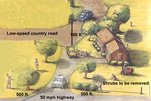
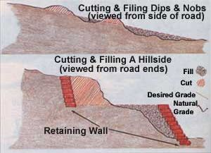

Planning and building your own country drive
Turning into our narrow, 200-year-old, packed-dirt driveway had always been arm-wrenching. In "mud-time," during each spring run-off, the drive entry hosted a running stream, while a periodic spring turned the section beside the house into a bog large enough to swallow small cars. The turnaround at the rear of the house had turned into a swamp. Then, our New England, hill-country road was graded and paved - making the approach swampier still - and we decided it was high time to bring the Colonial-era wagon path up to the automotive-era demands of modern times. Now our problems and solutions will not be the same as yours, but the steps we took should help you build or renew the drive of your own country place.
A driveway is a miniature
road.
Lessons from the pre-mechanized
past may be instructive if you plan
to do some of the work yourself.
Existing driveways should be "grandfathered" so that surface and interior improvements are exempt from building code and/or zoning regulations. However, if you are making a new or substantially enlarged curb-cut onto a public way, the "setback" from property lines, dimensions and construction of your drive will require approval from the town(ship) highway supervisor or engineer. If entering a State or County road, an additional permit and inspection are needed. To find out applicable regulations, you can visit your town clerk. Even if it is not required, a consultation with the township or county road boss can provide invaluable help in designing and constructing the best drive for your soil type, weather, and elevation. Indeed, you maybe able to hire the municipal crew and equipment for the heavy work. Keep in mind that rates are competitive and no one knows how to do the job better.
A driveway is a miniature road. Lessons from the pre-mechanized past may be instructive, especially if you plan to do some of the work yourself:
With the advent of wheeled vehicles, Stone Age footpaths became rutted, swampy areas became impassable, and steep grades became untraversable. The first roads (built 3,000 years ago in the Greek islands) were ruts, chiseled into rock hillsides to guide soil and water carts up to terraced fields. Today, the same "technology" is used on mountain logging roads, where ruts are intentionally worn into curves and grades in order to keep fastmoving, heavily-loaded trucks on track when mud roads are wet and slippery. You may find that a rut trail serves just fine for the four-wheel-drive track out to your back 40. Cut the trail in late spring in soft, but not soaked soil, and dig out rocks and roots that are interfering with the ruts. With steady use, the trail should gradually become compacted over the summer and fall, and the ruts should keep you on the road and moving in everything except for axle-deep mud or deep snow.
Romans were the preeminent road builders of the ancient world. The illustration shows a cross-section of a typical Roman road. A stone footing, compacted gravel or rubble interior, and a cobble surface remained firm in wet weather but would not turn to dust on dry days. Sides were ditched to carry off water, and culverts and bridges were built over dips to carry water under the road. Cobble surfaces were fine for foot-Legions but too bumpy for wheeled vehicles, and construction was (forced) labor-intensive. In the 19th century, J. J. Mac Adam designed British roads with smoother surfaces that could be built quickly and economically by freemen and draft animals. Not oiled or asphalted like modern macadam roads, the top was of fine crushed rock that compacted with use to shed water, but would not become too dusty in the summer. The road was domed and ditched to carry off rain. Although modern highways have a deeper multi-level foundation and solid asphalt or concrete surface, they are really not much different from Mac Adam's original design.
For your own drive, it's doubtful that you'll want to bury stone blocks Roman-style. You'll want to adopt Mac Adam's formula of digging out topsoil and laying in a well-ditched, contiguous-ribbon wedge of adhesive soil and rocks, compacted to repel water and topped so it won't grind to dust.
I'll warn you now that this article covers only drives of forgiving natural materials, which homeowners can design, build, and maintain at reasonable costs. I've seen too many amateur-laid thin, unreinforced concrete drives crack, and too many asphalt drives go gummy and sprout grass because they weren't rolled and the underlayment wasn't salted. Oh, there is a cold-set, water-mix asphalt you can buy in drums or pickup-truck lots, but it is suitable for walkways at best. Preparing a rolled gravel surface for hot-top or laying forms for concrete - and then trying to lay transit-mixed concrete or stick-to-everything-but-the-gravel asphalt so it turns out uniformly smooth - is no job for an amateur. If you want an asphalt or concrete drive, save your pennies, look in the Yellow Pages ...and have pros do the whole job.
The first step is to design (or redesign) your drive so that it will handle modern vehicular traffic. The drives of old country homes were designed for horses and wagons. They are narrow, have tight curves, and negotiate hills too abruptly for modern vehicles, so these old drives need to be broadened and have their transitions eased.
When you buy a new home, layout of the drive should be a major factor in the location and orientation of house and outbuildings. Walk the land until you know every dense stand of mature trees, every stream, wet spot, and rock outcropping. Then using a plat or survey map (if you have one), or paying for a topographical survey if you must, draw a detailed map of the land. Toy around with alternative layouts - avoiding as many hazards as you can. The more time you spend with paper and pencil, the easier time you will have when you go to lay out the drive.
Few of us have much choice when it comes to the compass direction that our drive faces and the terrain that it will traverse. If you do have an option, pick a southern exposure which will melt snow and dry quickly. Don't build a drive along the route of prevailing winds; it can become an expressway for cold blasts in winter and dust devils in summer.
If the drive is long and must run over extreme or complex elevations, across year-round streams or swamps - or must be blasted through rock ledge - you are in for a major expense. If this is the case, you are best advised to hire a civil engineer to lay it out for you. If your drive is short or on land with a gentle grade and easy rise and fall, you can do your own planning and layout on-site. Your strong back or a good heavy-equipment operator can do the rest.
Traffic safety comes first, and you must locate and design the driveway entrance to offer ample visibility. Be certain that you check with the town clerk for local regulations. But in a typical rural jurisdiction, the view from the drive (its aspect ) must offer a clear view of oncoming vehicles for 500 feet in both directions on a highway carrying high-velocity (over 50 mph) traffic; and for 100 feet if it is a low-speed road.
To evaluate aspect, sink sticks at each side of your drive entry so that their tops are four to five feet above the road surface. Measuring from the center of the drive along the road, set one stick to your right on the far side of the road, and the other to the left on your side of the road. Check aspect as though you were sitting in a vehicle with its front bumper 10 feet back from the road edge. If you can remove trees or other obstructions to better see the stick tops and you can open a clear vista between them, get out the chain saw. If sharp curves, immovable terrain, or buildings preclude a safe aspect, then you're going to have to redesign or relocate the drive. If on a sharp curve, you may be able to widen or branch the entry, or you can build a one-way drive across the curve to provide an acceptable aspect at each end. If you cannot come up with a suitable plan, you may need a variance. Again, go and see the town clerk.
Your second consideration should be driveability. The drive must provide safe, easy access for a motor vehicle from the road to the house (and back) in all weather. You'll want space for two vehicles to pass each other at the entry, at the house end, and on blind curves (at least). Zoning regulations will stipulate the width of your drive and its grade for a minimum distance beyond the curb cut. A typical one-vehicle drive is eight to 10 feet wide (12 feet is better) with a grade of no more than two percent at the entry - that is, rising no more than two feet in 100 feet of length - and a grade of no more than eight percent thereafter (and five percent is better). Unless you want to burn out your clutch, a maximum grade is 15 percent. Curves should be gradual - arcs of a circle with a radius of at least 24 feet. A 48-foot turning radius is better (and essential if you want a moving van or UPS truck to get in and out).
Third comes "returnability." A two-car drive between two curb cuts gives the best in-and-out access, if topography and finances permit. Lacking that possibility, the longer the drive, the more you will need ample parking and turn-around space for your car, for the pickup, and for party guests ...but most important, for an ambulance or fire truck. Consider a turning circle, a rectangular parking area, or parking-turnaround "T" at the drive's end. Turnaround posed very few problems with our own drive. The carriage yard behind the house provided ample space and needed only a length of perforated pipe to drain it and a good layer of solid fill to raise and firm it.
Last comes beauty. Most old-time country drives take the shortest route from road to barn - usually a straight line at a flat 90° to the road. Curves and angled approaches tender more of a welcome, however. If carefully planned and planted, a curved drive will shield your home from public view, even if buildings are close to the road. If you have the space, build in a gentle curve or two even if the terrain doesn't necessarily demand it.
If carefully planned, a curved drive
will shield your home from public
view, even if buildings are close
to the road.
The Layout and Stake-Out
Get a 100-foot length of stout cord and reels of fluorescent, gummed tape in two colors. Mark the cord with a tape flag every 10 feet. At 24 and 48-foot points (to gauge turning radius) flag with another color. Cut a six-foot stake and tape it at one-foot intervals, alternating contrasting colors. Finally, cut a supply of two-foot stakes and tape the tops of them for easy visibility in thick cover or grass. You'll need a line level as well.
The safest approach angle from road to drive is a flat 90°. The opening into the road should flare gradually and evenly on each side so that it will at least double the drive's width. This will allow for easy turns in and out. Stake out both sides of your entry in fair curves by setting out stakes every five feet. Then run a stake line up the center of the drive - stakes every 20 feet on the flat, every six feet around curves, and at the top of all nobs and knolls.
The rules are simple. Try to maintain a constant fall - as uniform a grade as possible - of between two and five percent. To maintain grade on a steep slope, run the drive back and forth along the face of the slope, doing your best to locate curves where the hill levels out. If you must contend with a steep rise, try to have the sharpest portion of the grade at the top of the drive (so you can make a running start to crest it in slippery weather).
To gauge grade, have a helper run the line out 50 (or 100) feet and place it on the ground. Attach the line level, pull the line tight, and level at your marked stake. If the line hits the one-foot (2') mark you have a two-percent grade; at the 2 1/2 ft (5') mark you have a five-percent grade.
Use the 24- and 48-foot marks on the line to lay out curves. Describe both size circles on flat land to get an idea of the extremes, and estimate them out on the land, checking later with the line (placed at the imaginary center of the circle described by your curve). Make the curves as fair - as near to the arc of a perfect circle - as you can.
As you encounter low nobs and shallow dips, run the line along the top of the rises. The road will be evened out as nobs are cut and dips are filled with the spoil. If a driveable grade or a fair curve requires cutting out the side of a large soil bank, the spoil can be used to fill dips or extend the roadway off to the side. The bare soil walls can be planted with trees and grass or buttressed with a terrace or retaining wall. (See illustration "Cuts and Fills" ) Terraces and retaining walls can be built out of timbers, rock, or of precast, interlocking concrete posts. But every cubic yard of spoil taken out must have somewhere to go, and its removal takes time and money. Every layer of fill needs compacting - but may still settle and need to be topped up. Avoid as much subsoil removal as you can, even if it means a longer drive.
Finally, if you are breaking a new trail in heavy cover, you'll need to clear the land. Trees must be felled, limbs must be pulled to the side, and brush must be cut and removed along the drive and for at least 10 feet to each side. Make this a two-goals-in-one job: Cut, split, and stack trees and large brush into next year's firewood. Stumps will have to come outa job for a bulldozer, unless you want to spend days digging, chopping, and levering each one. A motorized brush cutter will make the job of clearing grass and small brush easier. With the land open, cut more stakes and run stake lines up both sides of the new drive.
With enough time, a strong back, a shovel, and garden cart, you can build your own drive and compact it in thin layers with your truck or rented water-filled roller. When my friend Dean Leith Jr. was sales manager for a tiller maker, he built a driveway on his farm by cutting out topsoil with a big rear-tined tiller, moving soil out and then moving garden cart-loads of crushed rock in (with the help of a tillers' dozer blade). It's faster and a whole lot easier to hire a bulldozer to cut, fill, and compact, a tractor with a bucket loader, a backhoe to move soil and ditch, and dump trucks to haul. Either way, the steps are the same: 1. Cut out organics-rich topsoil; 2. Grade and compact the subsoil footing; 3. Add and compact a good-draining base; 4. Top off with a water-repellant surface; 5. Ditch.
The heart of your drive is the footing or base which must either drain naturally or raise the road surface high enough so that water won't saturate it. Well-draining subsoils such as sandy gravel or loam (a sand/silt/clay mix) need only be compacted when they've been used as fill and topped with a 6- to 8-inch surface layer of crushed rock or clay/gravel mix. Fine-particled clay and silt soils drain slowly, and often need a foot or more of base under the topping to make sure your drive won't turn to mush. Sand soils drain well, but they often provide so poor a footing that they must be dug out and replaced with gravel or crushed rock or mixed with a binding agent to form soil-cement. Here is where the local road boss can be of the utmost help.
Your road boss can advise you on the suitability of your soil, how much base is needed, and how the drive should be ditched. In addition, he can offer advice on availability and cost of suitable materials. Crushed rock and bank-run gravel are available in most places; cinders or slag, crushed coral or sea shells are found in specific areas. Or, you may learn that a few extra inches of your local soil will form a perfectly fine driveway if compacted and topped properly.
For installing a new drive on an average-draining soil, remove sod or forest loam, as well as the upper three to six inches of rich top soil (used for landscaping by commercial road-builders; you might save yours for a raised-bed garden). Grade and compact subsoil. Then lay on base material as needed: the best material being 1 to 1/2"-size rock or gravel in a layer three to 12 inches thick, as subsoil drainage requires. Estimate that a cubic yard will cover approximately 100 square feet, three inches deep. A dump truck will back in, then drive ahead, raising its bed as it goes to distribute each layer. Layers must then be spread evenly, graded level, and compacted before another layer is applied. Patience is a key ingredient at this point. You can spread and grade a short drive in sections (by eye) with a rake and a pair of lines stretched on stakes - a level line stretched across the road and a grade line stretched up and down its length. Compact with repeated passes over the entire surface, (not just over a pair of tire tracks) with a well-loaded pickup truck.
As the base is laid and compacted, it should be domed - graded at a slight angle to each side of the midline - to drain well. Then an inch or more layer of topping is laid. Small-size crushed rock is arguably the best. It will not shift or roll as will gravel, it compacts well to shed water and does not grind to dust. Small cinders, crushed coral, "coquina" limestone and sea shell drive toppings are locally available. Fine (under-one-inch) gravel is good once it is ground well into the under layer. Deposits of clayey small-gravel or weathered shale are available in some areas, known by such names as "greystone" or "redstone" Adhesive and nearly waterproof if put down in thin layers, each are compacted well, and since they are used as they come out of the pit, they are relatively cheap.
We solved our drive problem by having enough local rotten-shale "mudstone" hauled in to fill the dips, broaden the drive a foot, and widen the entry by half again. Just don't top your drive with six inches of pea gravel that I used once in my very early days as a country householder. A thin scattering looks good on a bare dirt drive, but a thick layer just rolls over itself and causes endless traction problems. After the truck swam through the stuff for a month like a lost ship on the sea, I swallowed my pride and had it scraped off and hauled away.
The rain that flows off your drive has to go somewhere or the drive will waterlog and turn to mud. Where the drive is flat, dig a two-foot-deep trench along each side. Pour a gravel bed and then set in a perforated drainage pipe or drain tiles, surrounding each joint with tarpaper. Cover with coarse gravel and top with excavated soil. Be sure the drainpipe slopes down as it runs, and that it empties into the roadside ditch well below your drive surface.
Open ditches along each side of the drive - bottoms the better part of a foot lower than both the road surface and the surrounding ground - are better (and easier) for sloping drives and cuts. (Most fills will slope to each side and drain naturally.) Make ditches a foot or more wide, as deep narrow ditches ask for rapid water flow and erosion. Prevent erosion in steep ditching by laying in rock sides and bottoms. Or build a series of baffle dams of rocks or logs, held up by lengths of pipe hammered into the ground.
Install culverts to channel water beneath the drive and to run the drive across the roadside ditch. The simplest way is to lay in tarred corrugated steel tubing (of a size appropriate to the depth and width of the ditch) and build the drive over it. Lay soil around the culvert in thin layers, compacting each by hand. If your area is prone to gulley washers, get really big culverts even if you need them only a few times a year. Avoid the most common mistake of home road-builders: Don't get culverts too small or set them so shallow that a heavy flow of water will undermine or overflow the tubing. A heavy rain can carry it away, leaving you with a flowing ditch at the foot of your drive.
Sink culverts deep enough below the ditch bottom or creek bed so that the water can lay an inch or two of gravel bed at their bottom. Culvert is available in sizes ranging from a few inches to several feet in diameter, with cost appropriate to size. When we broadened the entry of our own drive, I had to extend the existing foot-diameter culvert by four feet to the east. But I managed to scavenge a length of pipe from materials discarded when a local highway was broadened.
You can buy precast end-baffles for smaller-sized culverts to keep the drive from falling out, to help keep the culvert in place, and to break the force of occasional floods. It is better road craft, however, to dry-lay stone buttresses around each end of a culvert. The stonework looks better than a plastic or concrete flange or the tip of a bare metal pipe. It adds a finishing touch to the drive.
Most muddy spots can be cured by raising, compacting, and ditching the drive. But where rainwater stands in a pit, or groundwater bubbles up in a perennial or wet-season periodic spring, you have a sinkhole that must be bridged or drained. Our own sinkhole is only six feet long; while it is dry for most of the year, ground water wells up to within six inches of drive level for one week each spring. A neighbor solved a similar problem by cutting out mud in order to accept a couple of tons of inch-thick boiler plate he had delivered, and dropped in place by a rigger.
I chose to do it the old-fashioned-way - building a mini-corduroy road over a Roman-style rock footing. I hacked out the muddy area (with a pick mattock) down about 18 inches so that it revealed the spring, which indeed flowed slowly off to the East; it just rose too near the surface. I spaced good-size rocks about an inch apart in the bottom of the spring, and then I filled the spaces between them with large gravel in order to keep the water flowing. Over the rock I laid a foot-thick mat of six-foot-long sapling poles, and oriented up and down the drive. Over this, I laid cross-drive poles, and then topped it all with gravel, and kept throwing on gravel as we drove over and compacted the road. I anticipate having to add gravel each year... and periodically having to dig out and rebuild the whole thing.
Don't let something as
comparatively minor as a driveway dampen your
joy... plan and build your
drive well.
What I built was a small version of the floating mat road that has been used for centuries to bridge swamps and bogs. If you have a section of undrainable marsh or mud hollow to traverse, you might build a larger rendition. The time-tested method that resembles one (a thousand years old) found in Europe, is to interweave a road-size mat of thin branches in an alternating fore-and-aft / side-to-side cross-hatch pattern over the marsh. Stake each layer into the mud with down-forking branches. When the mat floats enough to support your weight without bouncing, lay on 6"-thick logs, butted tight together across the road. More poles can be nailed lengthwise to the bottom layer; a third layer can be spiked on top of that (crosswise) for a bumpy, corduroy effect. For a smoother road surface, spike on thick oak planks from a local lumber mill (if you can afford them).
Another solution for a mudhole is to drain it into a drywell. Dig down a foot or more and lay perforated drainage pipe or tile along the drive's wettest edge in order to collect the water. Connect it with a "T" fitting or bend it to a length of pipe laid in a down-sloping ditch to a low, dry area. There, dig a pit four feet or more down into the subsoil. Fill with gravel, top with tamped down excavated soil. If the pipe enters the drywell at a level below the drainage tile, you should have a dry drive.
Keep your drive in condition by grooming it frequently. Rake tire-thrown surface gravel from the sides and mid-ridge onto wheel tracks and into small pits in order to keep potholes or corduroy ridges from developing. Fill small pools of standing water after heavy rains, cutting small channels to the drive side to drain them if need be. If the drive deteriorates to ruts over the winter, rototill it to a depth of six inches with spring-toothed pick tines (available as accessories for your own or a rented large-size rototiller). Or, have it groomed with the road crew's power rake (don't have it scraped). Then compact it evenly, add another inch or two of topping, and see if drainage can be improved.
Finally, if you are in the early phases of picking that perfect spot for your new country home, factor in the feasibility and cost of building a country-practical drive. Down the mountain from us, a steep hillside has been subdivided into narrow minimum-frontage lots. Lacking ample lot width for gently rising, curved driveways, the fresh-from-town homeowners find their deeply cut switch-back drives washing out after heavy rains (one downhill drive at the bottom of a two-mile hill road becomes a virtual torrent after every thunderstorm). Not even a plow-equipped 4x4 pickup can bull its way up their steep drives through heavy, mid winter wet snow. So, following every blizzard, our new neighbors' vehicles cluster at drive entries, as they shovel for hours or struggle up and down slope with snow-blowers which are better suited to flat, paved suburban driveways. "For Sale" signs are beginning to pop up. Don't let something as comparatively minor as a driveway dampen your joy of country living ...plan and build your drive well.
|
 |
 |
|